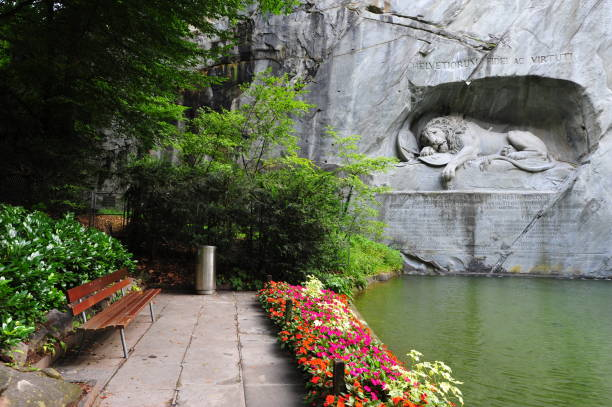
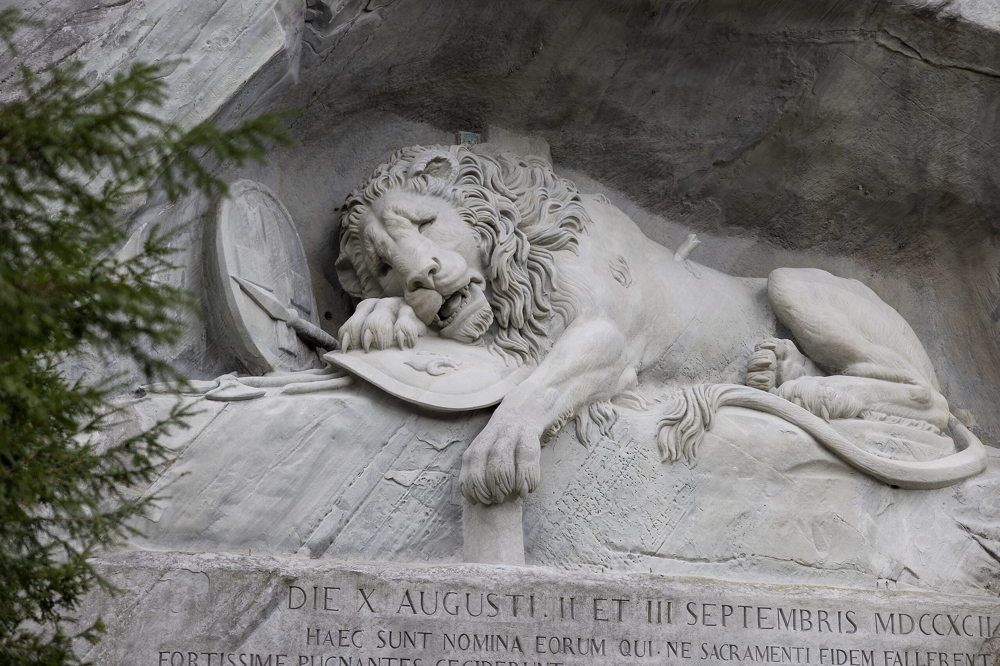
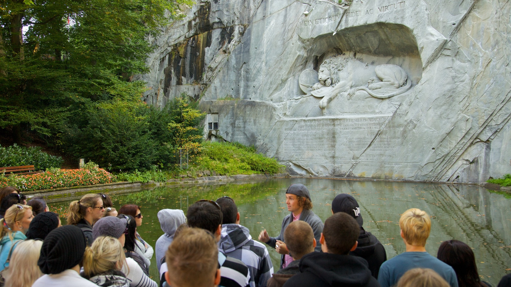

The Löwendenkmal, or Lion Monument, is carved into a sandstone cliff in Lucerne. It honors the Swiss Guards who died defending the French king during the 1792 attack on the Tuileries Palace, a lasting symbol of bravery and sacrifice.
The sculpture depicts a wounded lion lying over a broken shield, pierced by a spear. Its lifelike expression captures both pain and nobility, making it a hauntingly powerful tribute to courage and loyalty.
Designed by Bertel Thorvaldsen and carved in 1821, the monument is now a quiet, contemplative spot. Nestled in a park, it invites visitors to pause, reflect, and honor the memory of those who gave their lives.
